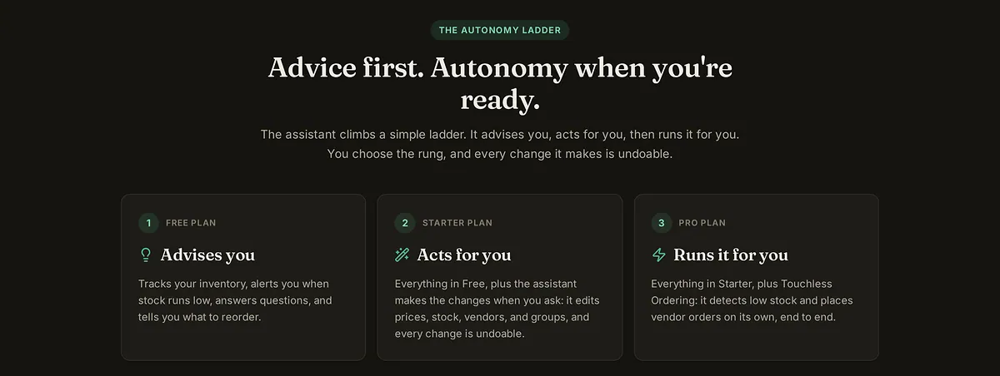
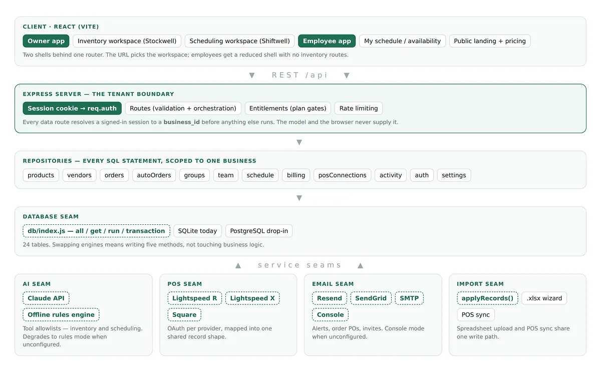

Stockwell
A multi-tenant retail operations platform that schedules staff and restocks shelves. Around 29,000 lines, 300+ automated tests, live in production.

Two chores too small to hire for and too constant to ignore.
A small retail shop loses hours every week to two jobs. Building the staff schedule around everyone’s availability, and noticing that something on the shelf is about to run out. Neither is hard. Both are relentless, and both are the kind of work that quietly eats a manager’s week.
Stockwell does both. Availability goes in and a finished weekly schedule comes out. Stock levels get watched in real time and reorders go to the vendor before a shelf goes empty.

Three decisions I would defend in an interview.
Never trust the model
The AI proposes a schedule. Separate deterministic code verifies it. Double bookings and untrained assignments get caught and repaired before anything is published, not apologised for afterwards. The model is a proposal engine, not an authority.
Isolation is a test, not a promise
Many businesses share one server. On every single test run, a battery of tests tries to reach another tenant’s data. Every attempt has to fail or the build fails. A security property you do not test is a security property you do not have.
Built to be swapped
The database, the AI provider, email and the POS imports each sit behind a narrow interface. Any one can be replaced without touching the rest, which matters because three of those four are somebody else’s product and out of my control.

Same discipline, different material.
It is fair to ask what a SaaS platform is doing next to a radiator mount. The honest answer is that the engineering habits are the same ones. Define the interface before you build across it. Assume the thing you did not test is broken. Design so the part you do not control can be swapped without a rewrite. Verify the output of anything you did not derive yourself.
The difference is that software lets you run the failure mode three hundred times before lunch. That is a luxury a machined part does not give you, and working in both has made me more careful with the one where you only get a few tries.
In hindsight: the tenant isolation tests should have been written first, before any feature. They ended up defining the shape of every query in the system, and retrofitting that was more expensive than designing for it would have been.